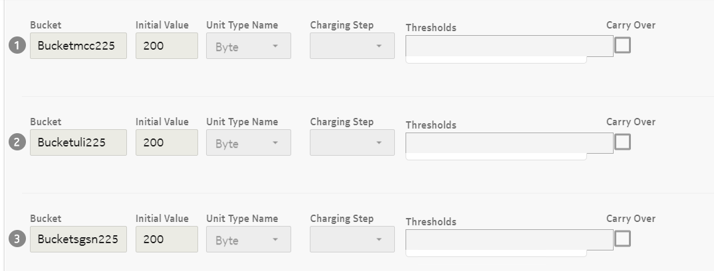
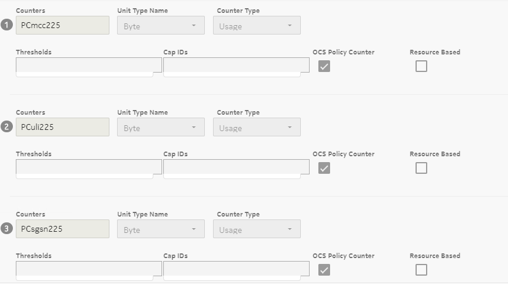
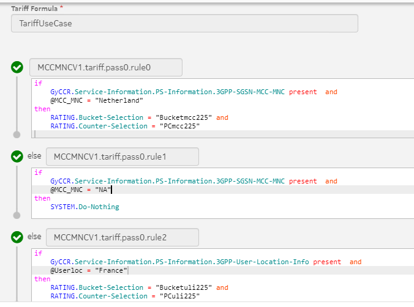
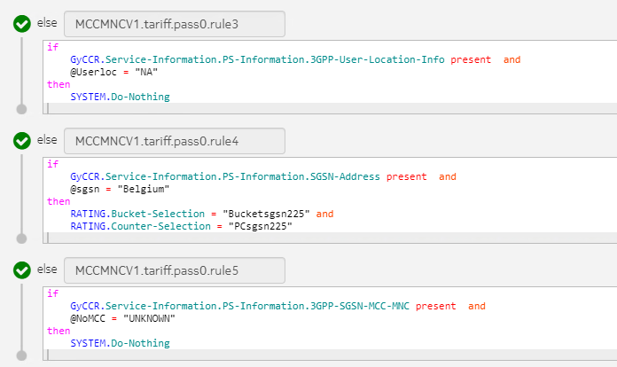
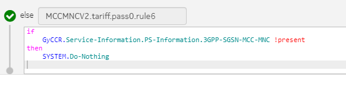
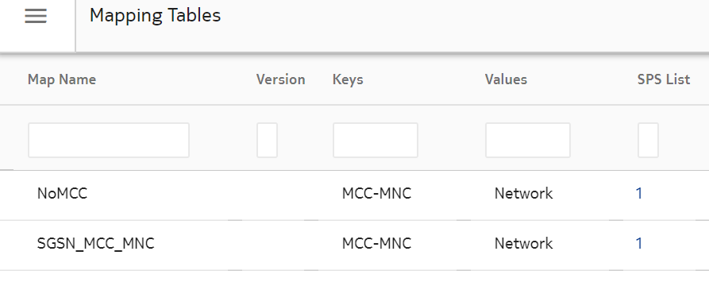
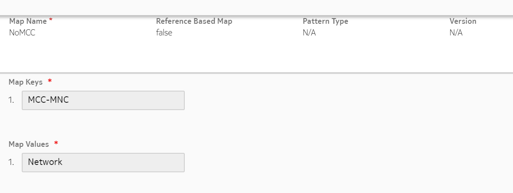
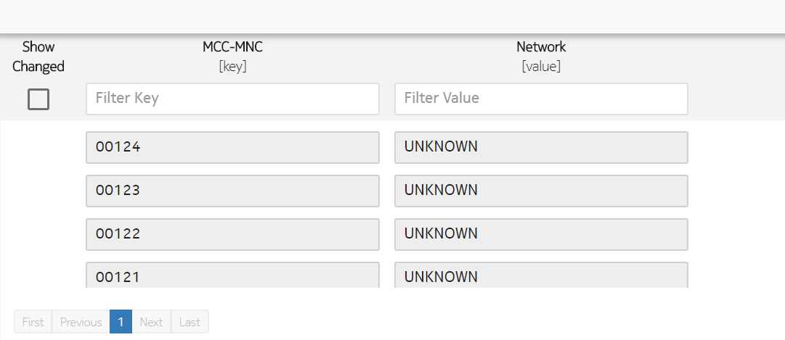
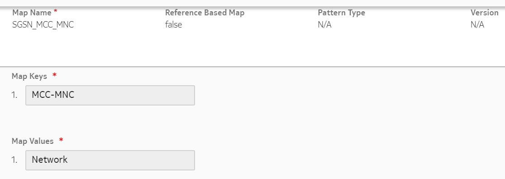
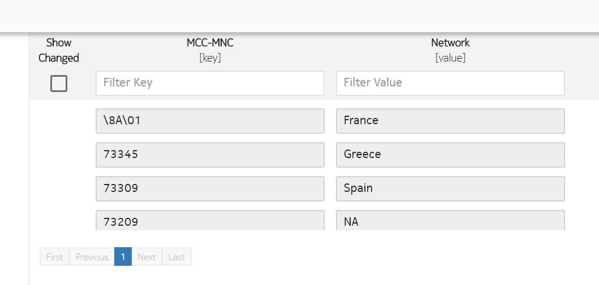

Roaming refers to a situation where a subscriber accesses services while it is attached to a visited network, or VPLMN, but it is charged by its home network (the network where the account(s) of the subscriber are managed). Roaming allows you to adapt the charging and rating applied to the user when located in a visited network that the home operator has a roaming agreement.
Roamer handling is similar to the way users in their home PLMN are handled. The users trigger the data service, whether they are in their home PLMN or in a visited PLMN and the location of the user is identified by the MCC (Mobile Country Code) and MNC (Mobile Network Code) or (if the MCC/MNC is missing) by the IP address of the SGSN.
The PS-Information AVP value in incoming requests received by the External Equipment is used for roaming identification in the following order:
PS-Information\3GPP-SGSN-MCC-MNC
PS-Information\SGSN-Address
PS-Information\3GPP-SGSN-Address
If the location matches a foreign network with a roaming agreement, the service allows for the configuration of a specific Event Type for this service that identifies it as a roaming trigger (MCC-MNC equals Visited PLMN and networkType equals ROAMING). Then the Rating Engine provides a specific rating, tariff, and charging policy for the service.
If an incoming MCC-MNC location matches a visited network configured with no roaming agreement, the user is considered as being attached to the Home PLMN (HPLMN).
If an incoming MCC-MNC location matches no configured visited network, then the request is rejected with the appropriate Result-Code.
The call controller roaming decision as to whether or not the call is a roaming scenario, is made internally using configured rules.
The following figure illustrates the flow for roaming status.
|
If... |
Then... |
|---|---|
| The GY_MESSAGE.Service-Context-Id = 32274@3gpp.org, | The CALL_RESULT.Default-Roaming-Decision = RoamingDecision HOME |
| The value is REJECT | The request is rejected with result code 5012 - DIAMETER_UNABLE_TO_COMPLY with the error message: Rejected because the system cannot get roaming status. |
| The value is ROAMING or HOME, | The call controller sets the roaming status. |
| The action does not exist, | The default value is REJECT. |
Roaming attributes can be configured using the complex map, that is, mapping tables entity in the SM GUI.
The default roaming decision can be configured in the SM GUI. Navigate to Charging configurator > Charging tab and select Rules And Variables from the hamburger menu (☰).
The timing determination is the definition of time delay for roaming cases based on either the code of the country where the end-user is calling from (if provided) or on the address of the IP SGSN provided by the network from where the end user is calling. A table is hosted by the service data to associate a time difference with the country codes. You can configure the service to rate either on the timing of the visited network or on the timing of the home network.
Subscribers can subscribe international roaming subscriptions that are active when subscriber is in a particular zone and uses a specific operator. Notifications can be sent once the subscriber tries to use the subscription when in a different zone or uses a different operator. Note that, MCC-MNC or SGSN IP can be used to determine the location of a subscriber. This can be configured in the Mapping tables.
For example, consider that a subscriber has a subscription of day pass bundle that is active only for zone1 and ABC operator. An SMS notification is sent in the following cases:
If the subscriber tries to use the subscription when not in zone1, then the call is rejected.
If a subscriber is in a valid network but not allowed to make calls in this network, then the call is rejected.
The notification includes the data defined in the notification template that can indicate that the subscriber is in wrong network.
Whenever there is an error in MCC-MNC or SGSN IP match, the notification can be sent to a subscriber using the rule set RATING_POST_PROCESSING. See the subsequent section with examples for more information.
Common configuration examples:
Ensure that the following entities are configured:
Create a charging service as shown in the following figure.
 Create the following mapping tables.
Mapping table 1
Mapping table 2
 Create the notification templates.
Create a subscription lifecycle to be linked to the bundle.
Create a bundle and attach the previously created charging service and lifecycle.
Create a device and account.
Example 1: MCC collected from network has null value
If the MCC is null, the result code 40010 (RULE_NOT_APPLICABLE) is returned and a notification is sent. Following is the rule configuration for RATING_POST_PROCESSING trigger:
Example 2: Roaming to wrong PLMN
If a subscriber tries to make calls when in wrong network, the result code 40010 is returned and a notification is sent and the call is terminated. Following is the rule configuration for RATING_POST_PROCESSING trigger:
Example 3: Roaming to correct PLMN without a valid bundle
If a subscriber is in the correct network but has no bundle to be used for the call, then the defined result code is returned and a notification is sent and the call is terminated. Following is the rule configuration for RATING_POST_PROCESSING trigger:
{kind=link}
{kind=link}
{kind=link}
{kind=link}
{kind=link}
{kind=link}
{kind=link}
{kind=link}
{kind=link}
{kind=link}